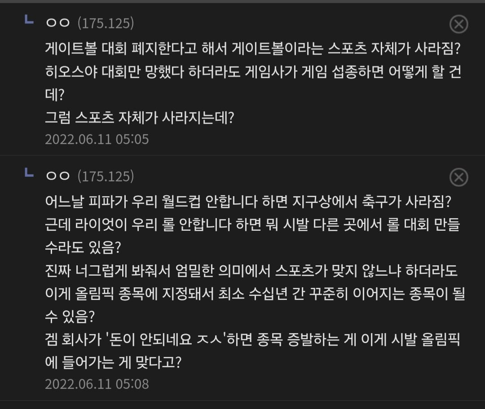
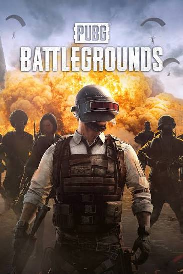

갑자기 게임사가 규칙을 바꾸거나 서비스를 종료하면 어떻게 함?

흐음

갑자기 게임사가 규칙을 바꾸거나 서비스를 종료하면 어떻게 함?

흐음
유연하게 생각하면 되는듯 올림픽, 아겜이 무슨 성역도 아니고 종목 지정했다가 서비스종료라던지 찐빠나면 그럼 빼면 되는거고
국위선양 옛날 이야기이듯 이제는 대회보다 축제로보는 시선도 많아서 그렇게까지 엄격하게 다룰필요 없다고생각
축구도 매년 룰 조금씩 바뀌고 다른 올림픽 종목들도 룰 조금씩 바뀌는데. 그거나 게임사가 룰 바꾸는거나 뭐
룰을 게임사가 거지같이 바꾸면 그게임은 세계적으로 비난받고 종목에서 퇴출되거나 하면 되는거고
게임이 망하면 다른 게임이 선택하면되는거고
그리고 게임사가 규칙바꿔도 어짜피 시스템적으로 모든 선수한테 동등하게 적용되지만
오히려 사람심판이 판정하는 스포츠종목이 더 편파판정이나 오심이 날 확률이 높음
롤만하더라도 버근지 오륜지 규칙도 지맘대로고 어쩔땐 징수터지고어쩔땐안터지고
스킬초기화도안되고 병신인데
그건 오심이 아니라 버그지.
롤로 비유하려면 레드팀이 넥서스 밀었는데 심판이 블루팀 승리로 했다 이런걸 오심이라고 해야겠지
아니면 옛날에 그 누구였더라 대회에서 중계모니터 몰래본걸 심판이 넘어가 준다면 이런게 오심
그니깐 축구에 버그같은건없자나
좀 애매한 구석이 있긴 함 개별종목이 있다 없다 하다보니ㅋㅋ
그냥 게임종류는 100미터 200미터 500미터 1000미터 그런거임
뭔 껨돌이들이 스포츠선수여?
그렇게 따지면 그깟 공놀이 이야기 들어봄?
정부에서 세금으로 스타크래프트 하나만 사와서 국가스포츠로 정하고 이거만 하면 문제 해결
올림픽이나 아시안게임같은거 보면 여러 종목들 있다가 사라지고 반복하긴 함
또 특정국가 너무 앞서가면 저격패치도 있음 ㅋㅋㅋ
이거 초기 올림픽에 축구농구 들어올때도 똑같은 소리했을걸. 저런 근본없는 공놀이따리 뭘믿고 넣냐고 ㅋㅋㅋ
규칙이나 밸런스가 게임사 결정 하나로 바뀌는데
알박기는 좀 오바임